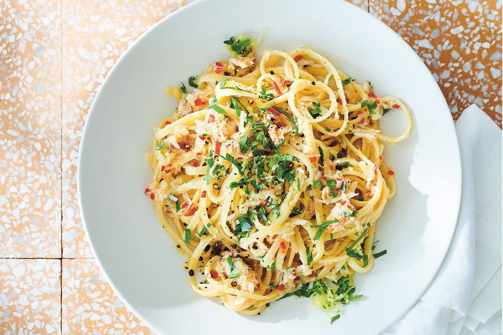

Crab and Chilli Linguine

Description
This is a meal full of crab, chilli, and flavor. This pasta is perfect
for the summer and is easy to make.
Ingredients
- 500g linguine
- 1/2 cup (125ml) olive oil
- 4 tbs unsalted butter
- 2 eschalots, finely chopped
- 4 garlic cloves, finely chopped
- 2 red chillies, finely chopped
- 400g spanner crab meat
- Zest & juice of 1 lemon
Steps
- Cook the linguine according to the packet instructions. Drain, reserving half a cupful of the cooking water.
- Meanwhile, heat oil and butter in a large frying pan and gently cook the shallots, garlic and chillies until slightly softened and fragrant. Add the linguine and pasta water and toss gently to completely coat.
- Fold in the crab meat. Stir in the lemon juice and half the parsley and season to taste. Serve in bowls, sprinkled with the remaining parsley, lemon zest, chilli flakes and freshly ground black pepper.